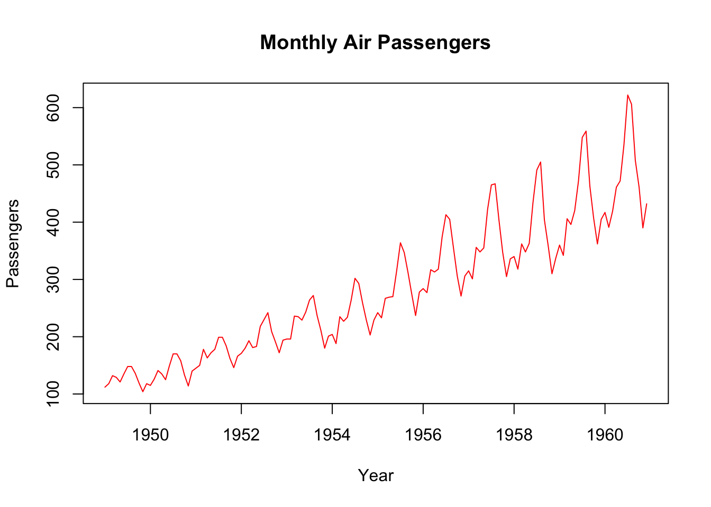
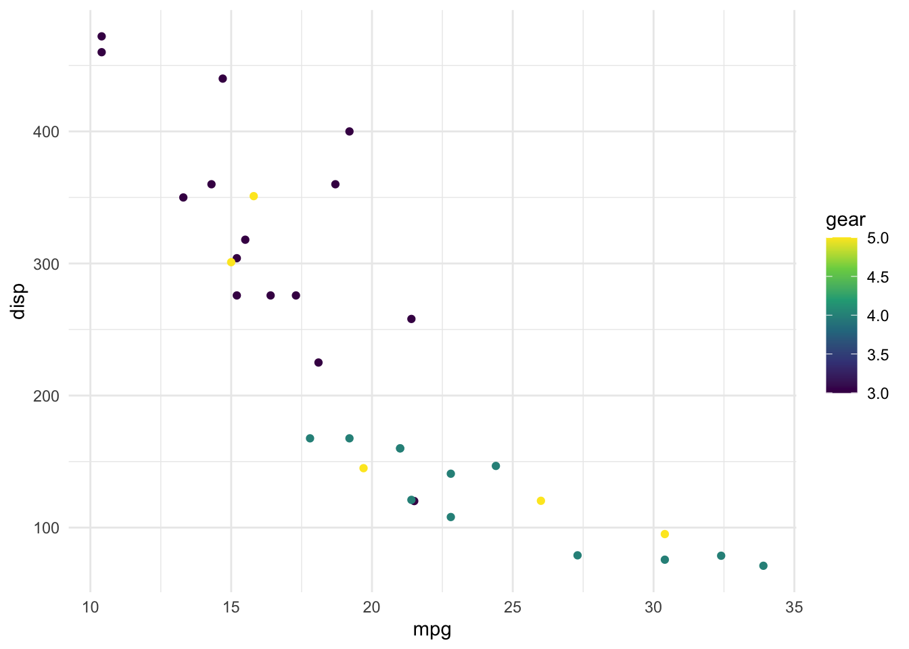

Chapter 3 R 语言数据分析
3.1 数据导入和导出
在R语言中，你可以使用各种函数和包来读取和导出数据，包括文本文件、CSV文件、Excel文件、数据库、以及其他常见的数据源。
3.1.1 数据读取
读取文本文件：你可以使用read.table()函数来读取文本文件，或者使用read.csv()函数来读取逗号分隔的文本文件。
# 读取文本文件
data <- read.table("data.txt", header = TRUE, sep = "\t")
读取Excel文件：readxl包或openxlsx包可以用于读取Excel文件。
# 读取Excel文件（使用readxl包）
library(readxl)
data <- read_excel("data.xlsx")
读取CSV文件：你可以使用read.csv()函数或readr包中的read_csv()函数来读取CSV文件。
# 读取CSV文件
data <- read.csv("data.csv")
读取数据库：你可以使用RODBC包或RMySQL包等数据库连接包来连接数据库并读取数据。
# 读取数据库（使用RODBC包）
library(RODBC)
channel <- odbcConnect("mydb")
data <- sqlQuery(channel, "SELECT * FROM mytable")
读取JSON数据：jsonlite包用于读取JSON格式的数据。
# 读取JSON数据（使用jsonlite包）
library(jsonlite)
data <- fromJSON("data.json")
3.1.2 数据导出
导出数据到文本文件：你可以使用write.table()函数将数据导出为文本文件。
# 导出数据到文本文件
write.table(data, "data.txt", sep = "\t", row.names = FALSE)
导出数据到CSV文件：使用write.csv()函数导出数据到CSV文件。
# 导出数据到CSV文件
write.csv(data, "data.csv", row.names = FALSE)
导出数据到Excel文件：writexl包用于将数据导出到Excel文件。
# 导出数据到Excel文件（使用writexl包）
library(writexl)
write_xlsx(data, "data.xlsx")
导出数据到数据库：你可以使用数据库连接包，如RODBC或RMySQL，将数据导出到数据库表。
# 导出数据到数据库（使用RODBC包）
library(RODBC)
channel <- odbcConnect("mydb")
sqlSave(channel, data, tablename = "mytable", append = TRUE)
导出数据到JSON：使用jsonlite包将数据导出为JSON格式。
# 导出数据到JSON（使用jsonlite包）
library(jsonlite)
toJSON(data, file = "data.json")
3.2 R 语言数据处理
3.2.1 缺失值处理
在R语言中，处理缺失值是数据预处理中的重要任务。R提供了多种方法来处理缺失值，包括识别、填充、删除和插补等。以下是一些处理缺失值的常见方法的总结：
- 识别缺失值： 在R中，缺失值通常用NA表示。可以使用以下函数来识别数据中的缺失值：
- is.na()：用于检查数据中是否包含缺失值，并返回逻辑向量，其中TRUE表示缺失值。
- complete.cases()：返回包含完整观测值的逻辑向量，通常用于过滤掉包含缺失值的行。
# 识别缺失值
data <- c(1, 2, NA, 4, 5)
is_missing <- is.na(data) # 返回逻辑向量
complete_data <- data[complete.cases(data)] # 过滤掉包含缺失值的行- 填充缺失值： 你可以使用以下函数来填充缺失值：
- na.omit()：删除包含缺失值的行。
- na.fill()：用指定的值替换缺失值。
- zoo包中的函数，如na.locf()，可以用最近的非缺失值填充缺失值。
# 填充缺失值
data <- c(1, 2, NA, 4, 5)
data_no_missing <- na.omit(data) # 删除包含缺失值的行
data_filled <- zoo::na.fill(data, fill = 0) # 用0替换缺失值
data_filled## [1] 1 2 0 4 5- 删除缺失值： 你可以使用以下函数删除包含缺失值的行或列：
- na.omit()：删除包含缺失值的行。
- na.exclude()：类似于na.omit()，但会保留一个用于计数的特殊属性。
- complete.cases()：返回包含完整观测值的逻辑向量。
# 删除缺失值
data <- data.frame(x = c(1, 2, NA, 4, 5), y = c(NA, 2, 3, 4, 5))
data_no_missing_rows <- na.omit(data) # 删除包含缺失值的行
data_no_missing_cols <- data[complete.cases(data),] # 删除包含缺失值的列
data_no_missing_cols## x y
## 2 2 2
## 4 4 4
## 5 5 5- 插补缺失值： 如果你希望根据数据的分布或其他方法来估算缺失值，可以使用以下方法：
- mice包：多重插补方法。
- 其他统计方法，如线性回归、随机森林等，用于预测缺失值。
##
## Attaching package: 'mice'## The following object is masked from 'package:stats':
##
## filter## The following objects are masked from 'package:base':
##
## cbind, rbind##
## iter imp variable
## 1 1 bmi hyp chl
## 1 2 bmi hyp chl
## 1 3 bmi hyp chl
## 1 4 bmi hyp chl
## 1 5 bmi hyp chl
## 2 1 bmi hyp chl
## 2 2 bmi hyp chl
## 2 3 bmi hyp chl
## 2 4 bmi hyp chl
## 2 5 bmi hyp chl
## 3 1 bmi hyp chl
## 3 2 bmi hyp chl
## 3 3 bmi hyp chl
## 3 4 bmi hyp chl
## 3 5 bmi hyp chl
## 4 1 bmi hyp chl
## 4 2 bmi hyp chl
## 4 3 bmi hyp chl
## 4 4 bmi hyp chl
## 4 5 bmi hyp chl
## 5 1 bmi hyp chl
## 5 2 bmi hyp chl
## 5 3 bmi hyp chl
## 5 4 bmi hyp chl
## 5 5 bmi hyp chl## Class: mids
## Number of multiple imputations: 5
## Imputation methods:
## age bmi hyp chl
## "" "pmm" "pmm" "pmm"
## PredictorMatrix:
## age bmi hyp chl
## age 0 1 1 1
## bmi 1 0 1 1
## hyp 1 1 0 1
## chl 1 1 1 0处理缺失值是数据预处理的重要一部分，R提供了多种方法来识别、填充、删除和插补缺失值。具体的方法取决于数据的性质和分析的需求，你可以根据具体情况选择合适的处理方法。
3.2.2 R异常值处理
在R语言中，异常值（outliers）是指数据集中与其余数据明显不同的数据点。异常值可能会对数据分析和建模产生不良影响，因此需要进行异常值检测和处理。
- 箱线图（Box Plot）： 箱线图是一种可视化方法，它可以帮助你快速识别数据中的异常值。箱线图显示了数据的分布情况，包括中位数、四分位数和可能的异常值。

- Z-得分（Z-Score）： Z-得分是一种统计方法，用于测量数据点与数据集均值之间的标准差差异。通常，超过一定的阈值（例如，Z-得分大于3或小于-3）的数据点被视为异常值。
## Sepal.Length Sepal.Width Petal.Length Petal.Width
## [1,] FALSE FALSE FALSE FALSE
## [2,] FALSE FALSE FALSE FALSE
## [3,] FALSE FALSE FALSE FALSE
## [4,] FALSE FALSE FALSE FALSE
## [5,] FALSE FALSE FALSE FALSE
## [6,] FALSE FALSE FALSE FALSE- 离群值检测包： R中有一些专门用于异常值检测的包，例如outliers、extRemes和robustbase。这些包提供了各种统计方法和算法来检测异常值。
- 简单统计方法： 一些简单的统计方法也可以用于异常值检测，例如使用百分位数来检测超出上下分位数范围的数据点。
# 使用百分位数
q1 <- quantile(iris$Sepal.Length, 0.25)
q3 <- quantile(iris$Sepal.Length, 0.75)
iqr <- q3 - q1
lower_bound <- q1 - 1.5 * iqr
upper_bound <- q3 + 1.5 * iqr
outliers <- iris$Sepal.Length < lower_bound | iris$Sepal.Length > upper_bound
outliers## [1] FALSE FALSE FALSE FALSE FALSE FALSE FALSE FALSE FALSE FALSE FALSE FALSE
## [13] FALSE FALSE FALSE FALSE FALSE FALSE FALSE FALSE FALSE FALSE FALSE FALSE
## [25] FALSE FALSE FALSE FALSE FALSE FALSE FALSE FALSE FALSE FALSE FALSE FALSE
## [37] FALSE FALSE FALSE FALSE FALSE FALSE FALSE FALSE FALSE FALSE FALSE FALSE
## [49] FALSE FALSE FALSE FALSE FALSE FALSE FALSE FALSE FALSE FALSE FALSE FALSE
## [61] FALSE FALSE FALSE FALSE FALSE FALSE FALSE FALSE FALSE FALSE FALSE FALSE
## [73] FALSE FALSE FALSE FALSE FALSE FALSE FALSE FALSE FALSE FALSE FALSE FALSE
## [85] FALSE FALSE FALSE FALSE FALSE FALSE FALSE FALSE FALSE FALSE FALSE FALSE
## [97] FALSE FALSE FALSE FALSE FALSE FALSE FALSE FALSE FALSE FALSE FALSE FALSE
## [109] FALSE FALSE FALSE FALSE FALSE FALSE FALSE FALSE FALSE FALSE FALSE FALSE
## [121] FALSE FALSE FALSE FALSE FALSE FALSE FALSE FALSE FALSE FALSE FALSE FALSE
## [133] FALSE FALSE FALSE FALSE FALSE FALSE FALSE FALSE FALSE FALSE FALSE FALSE
## [145] FALSE FALSE FALSE FALSE FALSE FALSE3.3 R探索性数据分析
探索性数据分析（Exploratory Data Analysis，EDA）是数据分析过程中的关键步骤，旨在了解数据的特点、检测异常、发现模式和提供初步见解。
- 描述性统计： 使用统计函数如summary()、mean()、median()、sd()等来获取关于数据分布的基本信息。
# 描述性统计
summary(data$column_name) # 综合描述
mean(data$column_name) # 均值
median(data$column_name) # 中位数
sd(data$column_name) # 标准差
- 直方图和密度图： 绘制直方图和密度图以可视化数据分布。
# 直方图
hist(data$column_name)
# 密度图
plot(density(data$column_name))
- 箱线图： 绘制箱线图以可视化数据的五数概括（最小值、第一四分位数、中位数、第三四分位数、最大值），帮助检测异常值。
# 箱线图
boxplot(data$column_name)
- 散点图： 使用散点图来探索两个连续变量之间的关系，以检测相关性和趋势。
# 散点图
plot(data$variable1, data$variable2)
- 多变量分析： 使用多元分析方法如主成分分析（PCA）和聚类分析来降维和发现数据中的模式。
# 主成分分析
pca_result <- prcomp(data[, -1], scale = TRUE)
# 聚类分析
kmeans_result <- kmeans(data[, -1], centers = 3)
3.3.1 AutoEDA
自动探索性数据分析（Automated Exploratory Data Analysis，Auto EDA）是一种使用计算机算法和工具来自动执行数据探索的方法，以提供关于数据的初步见解。以下是一些R中用于自动EDA的工具和包的总结：
- autoEDA 包： autoEDA包是一个R包，它提供了一系列函数来自动执行EDA，包括数据摘要、可视化、异常值检测和缺失值处理。这个包可以帮助你快速了解数据的基本特征。
# 安装autoEDA包
install.packages("autoEDA")
# 使用autoEDA包执行自动EDA
library(autoEDA)
eda_summary(data)
- DataExplorer 包： DataExplorer包是另一个R包，它提供了自动化的EDA功能，包括数据摘要、可视化、异常值检测和关系分析。它可以自动生成数据报告，使你更容易理解数据。
# 安装DataExplorer包
install.packages("DataExplorer")
# 使用DataExplorer包执行自动EDA
library(DataExplorer)
create_report(data)
- pandas_profiling： 虽然pandas_profiling是Python中的一个包，但它也可以用于自动EDA。它生成详细的报告，包括关于数据的统计信息、分布、相关性和异常值的信息。
# 安装reticulate包来调用Python库
install.packages("reticulate")
# 使用pandas_profiling进行自动EDA
library(reticulate)
pandas_profiling <- import("pandas_profiling")
report <- pandas_profiling$ProfileReport(data)
- auto_eda 包： auto_eda包是一个R包，它使用机器学习模型来自动执行EDA，包括特征选择和可视化。它可以帮助你识别关键特征和趋势。
# 安装auto_eda包
devtools::install_github("gabrielodom/auto_eda")
# 使用auto_eda包执行自动EDA
library(auto_eda)
auto_eda(data)
这些工具和包可帮助数据分析人员在不需要手动执行每个EDA步骤的情况下，快速获得数据的洞见。根据数据的特点和需求，你可以选择适合你的自动EDA工具。
3.3.2 R 语言数据可视化
- 数据可视化细节调整： https://rpubs.com/liam/detailofplot , https://rpubs.com/liam/plotdetail
- 数据可视化主题: https://rpubs.com/liam/ggplot2theme
- echarts 数据可视化: https://rpubs.com/liam/echarts42021
- plotly 交互式绘图: http://rpubs.com/liam/plotly
- Shiny 初级教程: https://rpubs.com/liam/463812
- Shiny 中级教程: https://rpubs.com/liam/Shinymid
另外参考:
- 米霖.(2021). R语言数据可视化实战 .中国:机械工业出版社 – url:https://www.hzmedia.com.cn/books11121329
3.3.2.1 R基本绘图
- 直方图： 直方图用于显示数据的分布。下面的示例使用R的内置数据集iris来创建花瓣长度的直方图：
# 加载数据集
data(iris)
# 创建直方图
hist(iris$Petal.Length, col = "lightblue", main = "Petal Length Histogram", xlab = "Petal Length")- 散点图： 散点图用于显示两个变量之间的关系。以下示例使用mtcars数据集来创建汽车的马力和燃油效率之间的散点图：
# 加载数据集
data(mtcars)
# 创建散点图
plot(mtcars$hp, mtcars$mpg, col = "blue", xlab = "Horsepower", ylab = "Miles per Gallon", main = "Scatterplot of Horsepower vs. MPG")- 箱线图： 箱线图用于可视化数据的分布和异常值。下面的示例使用iris数据集来创建不同种类的花瓣长度的箱线图：
# 加载数据集
data(iris)
# 创建箱线图
boxplot(iris$Petal.Length ~ iris$Species, col = "lightgreen", main = "Petal Length Boxplot by Species", xlab = "Species", ylab = "Petal Length")- 折线图： 折线图用于显示随时间变化的数据。以下示例使用内置数据集AirPassengers来创建乘客数量的月度折线图：
# 加载数据集
data(AirPassengers)
# 创建折线图
plot(AirPassengers, type = "l", col = "red", xlab = "Year", ylab = "Passengers", main = "Monthly Air Passengers")
3.3.2.2 ggplot2
ggplot2是R语言中用于数据可视化的强大包，它提供了丰富的功能和灵活性，允许你创建各种类型的精美图形。
- 创建基本散点图： 使用ggplot()函数来创建一个基本的散点图，指定数据和要显示的变量。

- 自定义图形外观： 你可以自定义图形的外观，包括点的颜色、大小、形状和坐标轴标签。
# 自定义图形外观
ggplot(data = mtcars, aes(x = mpg, y = disp, color = gear)) +
geom_point(size = 3, shape = 17) +
labs(x = "Miles per Gallon", y = "Displacement", color = "Gear")- 添加图层： 使用+运算符来添加图层，例如，添加线条、平滑曲线、文本注释等。
# 添加图层
ggplot(data = mtcars, aes(x = mpg, y = disp, color = gear)) +
geom_point() +
geom_smooth(method = "lm", se = FALSE) +
geom_text(aes(label = rownames(mtcars), hjust = 1.1))## `geom_smooth()` using formula = 'y ~ x'## Warning: The following aesthetics were dropped during statistical transformation: colour
## ℹ This can happen when ggplot fails to infer the correct grouping structure in
## the data.
## ℹ Did you forget to specify a `group` aesthetic or to convert a numerical
## variable into a factor?- 绘制其他类型的图形： ggplot2支持绘制多种类型的图形，如直方图、箱线图、条形图等。
# 绘制直方图
ggplot(data = mtcars, aes(x = mpg)) +
geom_histogram(binwidth = 2, fill = "lightblue", color = "black")## Warning: Continuous x aesthetic
## ℹ did you forget `aes(group = ...)`?
- 使用主题和调色板： 你可以使用不同的主题和调色板来自定义图形的整体外观。
# 使用主题和调色板
ggplot(data = mtcars, aes(x = mpg, y = disp, color = gear)) +
geom_point() +
theme_minimal() +
scale_color_continuous(type = "viridis")
3.3.2.3 创建出版级别的图表
要创建出版级别的数据可视化图形，你需要注意细节、图形外观和注释。
选择合适的图形类型： 选择最适合你的数据和目的的图形类型。常见的选项包括散点图、线图、直方图、箱线图等。
设置图形大小和分辨率： 确保图形的大小和分辨率足够高，以适应出版需要。你可以使用ggsave()函数保存图形，并指定图形的大小和分辨率。
# 设置图形大小和分辨率
ggsave("publication_graph.png", width = 8, height = 6, dpi = 300)
- 自定义图形外观： 使用theme()函数来自定义图形的外观，包括标题、坐标轴、标签、颜色、字体大小等。
# 自定义图形外观
ggplot(data = mtcars, aes(x = mpg, y = disp, color = gear)) +
geom_point() +
labs(title = "Scatter Plot of MPG vs. Displacement",
x = "Miles per Gallon",
y = "Displacement") +
theme_minimal() +
theme(text = element_text(size = 12))- 添加注释和标签： 在图形上添加必要的注释、标签和图例，以帮助读者理解图形。
# 添加注释和标签
ggplot(data = mtcars, aes(x = mpg, y = disp, color = gear)) +
geom_point() +
labs(title = "Scatter Plot of MPG vs. Displacement",
x = "Miles per Gallon",
y = "Displacement") +
theme_minimal() +
theme(text = element_text(size = 12)) +
geom_text(aes(label = rownames(mtcars), hjust = 1.1))这些准则和示例将帮助你创建出版级别的数据可视化图形，以便在出版物、报告或演示中使用。通过精心调整图形的各个方面，你可以确保图形既具有信息性又具有美观性。
3.4 R语言统计推断
统计推断是统计学中的一个重要分支，用于从样本数据中推断总体参数、进行假设检验和置信区间估计。以下是关于R语言中统计推断的总结，包括基本概念和常见方法：
- 基本概念：
- 总体和样本：总体是研究对象的全体，样本是从总体中抽取的一部分数据。
- 参数和统计量：总体的特征量称为参数，样本的特征量称为统计量。
- 抽样分布：抽样分布是统计量的分布，表示不同样本可能的值。
- 假设检验：
- 假设检验的步骤：假设检验包括提出原假设（H0）和备择假设（H1），计算检验统计量，以及比较检验统计量与临界值或P值来做出决策。
- 假设检验函数：在R中，t.test()、wilcox.test()、chisq.test()等函数可用于不同类型的假设检验。
- 显著性水平：显著性水平（通常设为0.05）是拒绝原假设的概率阈值。
- 置信区间估计：
- 置信区间：置信区间是对参数的区间估计，表示我们对参数值的估计范围。
- 置信区间函数：在R中，t.test()、prop.test()、confint()等函数可用于计算置信区间。
- 方差分析：
- 单因素方差分析：用于比较多个组之间的均值是否存在显著差异。
- 双因素方差分析：考虑两个或多个因素对结果的影响。
- 方差分析函数：在R中，aov()、lm()等函数可用于执行方差分析。
- 非参数统计方法：
- Wilcoxon符号秩检验：用于比较两个配对样本的差异。
- Kruskal-Wallis检验：用于比较多个组的差异，不要求满足正态分布。
- 非参数统计函数：在R中，wilcox.test()、kruskal.test()等函数可用于非参数统计。
- 回归分析：
- 线性回归：用于建立连续因变量和一个或多个自变量之间的关系。
- 逻辑回归：用于建立二元或多元分类问题的模型。
- 回归函数：在R中，lm()、glm()等函数可用于执行回归分析。
- 生存分析：
- Kaplan-Meier曲线：用于分析事件发生的时间。
- Cox比例风险模型：用于研究生存时间和危险因素之间的关系。
- 生存分析函数：在R中，survival包提供了生存分析工具。
- 多重比较校正：
- Bonferroni校正：用于控制多重比较的错误率。
- Tukey校正：用于ANOVA多组比较时的多重比较校正。
- 多重比较校正函数：在R中，p.adjust()函数用于多重比较校正。
等等
统计推断是数据分析的重要工具，帮助研究者从样本中得出关于总体的推断。使用R语言，你可以执行各种统计推断分析，根据你的研究问题选择适当的方法。
3.4.0.1 假设检验
在R语言中进行假设检验的步骤通常包括：提出原假设（H0）、提出备择假设（H1）、计算检验统计量、计算P值、确定显著性水平（通常设为0.05），然后根据P值和显著性水平来做出决策。以下是不同类型假设检验的总结和完整示例：
- 单样本t检验：
用于检验一个总体均值是否等于某个特定值。
# 创建一个样本数据
data <- c(24, 25, 23, 22, 27, 28, 30, 32, 26, 29)
# 单样本t检验
t.test(data, mu = 28) # 原假设：总体均值等于28##
## One Sample t-test
##
## data: data
## t = -1.3817, df = 9, p-value = 0.2004
## alternative hypothesis: true mean is not equal to 28
## 95 percent confidence interval:
## 24.30788 28.89212
## sample estimates:
## mean of x
## 26.6- 双样本t检验： 用于比较两组样本的均值是否存在显著差异。
# 创建两组样本数据
group1 <- c(24, 25, 23, 22, 27)
group2 <- c(28, 30, 32, 26, 29)
# 双样本t检验
t.test(group1, group2) # 原假设：两组均值相等##
## Welch Two Sample t-test
##
## data: group1 and group2
## t = -3.6389, df = 7.8253, p-value = 0.006853
## alternative hypothesis: true difference in means is not equal to 0
## 95 percent confidence interval:
## -7.853691 -1.746309
## sample estimates:
## mean of x mean of y
## 24.2 29.0- 配对样本t检验： 用于比较相依样本的均值是否存在显著差异。
# 创建配对样本数据
before <- c(24, 25, 23, 22, 27)
after <- c(28, 30, 32, 26, 29)
# 配对样本t检验
t.test(before, after, paired = TRUE) # 原假设：差值的均值等于0##
## Paired t-test
##
## data: before and after
## t = -4.1466, df = 4, p-value = 0.0143
## alternative hypothesis: true mean difference is not equal to 0
## 95 percent confidence interval:
## -8.013968 -1.586032
## sample estimates:
## mean difference
## -4.8- 卡方检验： 用于比较两个或多个分类变量之间的关联性。
##
## Pearson's Chi-squared test with Yates' continuity correction
##
## data: data
## X-squared = 15.638, df = 1, p-value = 7.67e-05- 方差分析： 用于比较多组之间的均值是否存在显著差异。
# 创建多组样本数据
group1 <- c(24, 25, 23, 22, 27)
group2 <- c(28, 30, 32, 26, 29)
group3 <- c(35, 38, 40, 36, 39)
# 单因素方差分析
aov_result <- aov(c(group1, group2, group3) ~ rep(1:3, each = 5))
# 方差分析的显著性检验
summary(aov_result) # 检验因素的显著性## Df Sum Sq Mean Sq F value Pr(>F)
## rep(1:3, each = 5) 1 448.9 448.9 91.14 3.07e-07 ***
## Residuals 13 64.0 4.9
## ---
## Signif. codes: 0 '***' 0.001 '**' 0.01 '*' 0.05 '.' 0.1 ' ' 1- Wilcoxon符号秩检验： 用于比较两组配对样本的差异。
# 创建配对样本数据
before <- c(24, 25, 23, 22, 27)
after <- c(28, 30, 32, 26, 29)
# Wilcoxon符号秩检验
wilcox.test(before, after, paired = TRUE) # 原假设：两组差值的分布相同## Warning in wilcox.test.default(before, after, paired = TRUE): cannot compute
## exact p-value with ties##
## Wilcoxon signed rank test with continuity correction
##
## data: before and after
## V = 0, p-value = 0.05791
## alternative hypothesis: true location shift is not equal to 03.4.0.2 置信区间
在R语言中进行置信区间估计可以帮助你确定一个参数的估计范围。
- 单样本均值的置信区间： 用于估计一个总体均值的区间。
# 创建一个样本数据
data <- c(24, 25, 23, 22, 27, 28, 30, 32, 26, 29)
# 单样本均值的置信区间估计
conf_interval <- t.test(data)$conf.int
conf_interval # 输出置信区间的下限和上限## [1] 24.30788 28.89212
## attr(,"conf.level")
## [1] 0.95- 双样本均值的置信区间： 用于比较两组样本均值的区间估计。
# 创建配对样本数据
before <- c(24, 25, 23, 22, 27)
after <- c(28, 30, 32, 26, 29)
# 配对样本均值的置信区间估计
conf_interval <- t.test(before, after, paired = TRUE)$conf.int
conf_interval # 输出置信区间的下限和上限## [1] -8.013968 -1.586032
## attr(,"conf.level")
## [1] 0.95- 配对样本均值的置信区间： 用于估计相依样本的均值差异的区间。
# 创建配对样本数据
before <- c(24, 25, 23, 22, 27)
after <- c(28, 30, 32, 26, 29)
# 配对样本均值的置信区间估计
conf_interval <- t.test(before, after, paired = TRUE)$conf.int
conf_interval # 输出置信区间的下限和上限## [1] -8.013968 -1.586032
## attr(,"conf.level")
## [1] 0.95- 比例的置信区间： 用于估计一个总体比例的区间。
# 创建一个二项分布样本数据
successes <- 30
trials <- 100
sample_proportion <- successes / trials
# 比例的置信区间估计
conf_interval <- prop.test(successes, trials)$conf.int
conf_interval # 输出置信区间的下限和上限## [1] 0.2145426 0.4010604
## attr(,"conf.level")
## [1] 0.95- 方差的置信区间： 用于估计一个总体方差的区间。
library(stats)
# 示例数据集
data <- c(12, 14, 15, 18, 20, 22, 24, 26)
# 计算样本方差
sample_variance <- var(data)
# 置信水平
confidence_level <- 0.95
# 样本大小
n <- length(data)
# 自由度
df <- n - 1
# 计算标准误差
standard_error <- sqrt(sample_variance / n)
# 计算t分布的临界值（双尾）
t_critical <- qt((1 - confidence_level) / 2, df)
# 计算方差的置信区间
lower_bound <- (n - 1) * sample_variance / qchisq((1 - confidence_level) / 2, df)
upper_bound <- (n - 1) * sample_variance / qchisq((1 + confidence_level) / 2, df)
# 打印方差的置信区间
cat("方差的置信区间 (95%): [", lower_bound, ", ", upper_bound, "]\n")## 方差的置信区间 (95%): [ 103.4843 , 10.92098 ]以上是不同类型的置信区间估计的总结和示例。在进行置信区间估计时，确保了解你的研究问题和数据类型，并选择适当的方法。置信区间表示了参数估计的不确定性范围，帮助你更好地理解数据。
3.4.1 方差分析
方差分析是一种用于比较多个组之间均值是否存在显著差异的统计方法。
3.4.1.0.1 单因素方差分析：
单因素方差分析用于比较多个组之间的均值是否存在显著差异。以下是一个完整的示例：
# 创建多组样本数据
group1 <- c(24, 25, 23, 22, 27)
group2 <- c(28, 30, 32, 26, 29)
group3 <- c(35, 38, 40, 36, 39)
# 合并数据
all_data <- data.frame(
Value = c(group1, group2, group3),
Group = factor(rep(1:3, each = 5))
)
# 单因素方差分析
anova_result <- aov(Value ~ Group, data = all_data)
# 检验因素的显著性
summary(anova_result)## Df Sum Sq Mean Sq F value Pr(>F)
## Group 2 460.9 230.47 53.19 1.09e-06 ***
## Residuals 12 52.0 4.33
## ---
## Signif. codes: 0 '***' 0.001 '**' 0.01 '*' 0.05 '.' 0.1 ' ' 13.4.1.0.2 双因素方差分析：
双因素方差分析考虑两个或多个因素对结果的影响。以下是一个完整的双因素方差分析示例：
# 创建多组样本数据
group1 <- c(24, 25, 23, 22, 27)
group2 <- c(28, 30, 32, 26, 29)
group3 <- c(35, 38, 40, 36, 39)
# 创建两个因素（因子）
factor1 <- factor(rep(1:3, each = 5))
factor2 <- factor(rep(1:3, times = 5))
# 合并数据
all_data <- data.frame(
Value = c(group1, group2, group3),
Factor1 = factor1,
Factor2 = factor2
)
# 双因素方差分析
anova_result <- aov(Value ~ Factor1 * Factor2, data = all_data)
# 检验因素和交互作用的显著性
summary(anova_result)## Df Sum Sq Mean Sq F value Pr(>F)
## Factor1 2 460.9 230.47 184.373 4.1e-06 ***
## Factor2 2 3.8 1.91 1.527 0.2911
## Factor1:Factor2 4 40.7 10.17 8.137 0.0133 *
## Residuals 6 7.5 1.25
## ---
## Signif. codes: 0 '***' 0.001 '**' 0.01 '*' 0.05 '.' 0.1 ' ' 13.4.2 非参数检验
非参数检验是一种用于统计假设检验的方法，它不要求数据符合特定的分布假设，特别是不要求数据服从正态分布。相对于参数检验，非参数检验更加灵活，适用于各种数据类型和分布情况。
非参数检验通常用于以下情况：
数据不服从正态分布：当数据不满足正态分布假设时，传统的参数检验（如t检验和方差分析）不适用。非参数检验是一种解决方案。
数据类型不明确：非参数检验适用于不同类型的数据，包括定序数据、名义数据和间隔数据。
小样本数据：非参数检验在小样本情况下表现良好，不依赖于样本量。
一些常见的非参数检验方法包括Wilcoxon符号秩检验、Mann-Whitney U检验、Kruskal-Wallis检验、Friedman检验、Kendall相关性检验等。这些方法基于秩或排名的分析，而不是基于原始数据值的分析。
非参数检验的优点包括对数据分布的假设要求较少，适用于各种数据类型，以及在小样本情况下的鲁棒性。然而，非参数检验通常对于检测效应较小的差异要求更大的样本量，因此在某些情况下可能不如参数检验敏感。选择适当的检验方法应基于研究问题和数据性质。
- Wilcoxon符号秩检验： Wilcoxon符号秩检验用于比较两组配对样本的差异。
# 创建配对样本数据
before <- c(24, 25, 23, 22, 27)
after <- c(28, 30, 32, 26, 29)
# Wilcoxon符号秩检验
wilcox_test <- wilcox.test(before, after, paired = TRUE)## Warning in wilcox.test.default(before, after, paired = TRUE): cannot compute
## exact p-value with ties##
## Wilcoxon signed rank test with continuity correction
##
## data: before and after
## V = 0, p-value = 0.05791
## alternative hypothesis: true location shift is not equal to 0- Mann-Whitney U检验： Mann-Whitney U检验用于比较两组独立样本的差异。
# 创建两组独立样本数据
group1 <- c(24, 25, 23, 22, 27)
group2 <- c(28, 30, 32, 26, 29)
# Mann-Whitney U检验
mannwhitneyu_test <- wilcox.test(group1, group2)
mannwhitneyu_test##
## Wilcoxon rank sum exact test
##
## data: group1 and group2
## W = 1, p-value = 0.01587
## alternative hypothesis: true location shift is not equal to 0- Kruskal-Wallis检验： Kruskal-Wallis检验用于比较多组独立样本的差异。
# 创建多组独立样本数据
group1 <- c(24, 25, 23, 22, 27)
group2 <- c(28, 30, 32, 26, 29)
group3 <- c(35, 38, 40, 36, 39)
# Kruskal-Wallis检验
kruskal_test <- kruskal.test(list(group1, group2, group3))
kruskal_test##
## Kruskal-Wallis rank sum test
##
## data: list(group1, group2, group3)
## Kruskal-Wallis chi-squared = 12.02, df = 2, p-value = 0.002454- Friedman检验： Friedman检验用于比较多组配对样本的差异。
wb <- aggregate(warpbreaks$breaks,
by = list(w = warpbreaks$wool,
t = warpbreaks$tension),
FUN = mean)
wb## w t x
## 1 A L 44.55556
## 2 B L 28.22222
## 3 A M 24.00000
## 4 B M 28.77778
## 5 A H 24.55556
## 6 B H 18.77778##
## Friedman rank sum test
##
## data: wb$x, wb$w and wb$t
## Friedman chi-squared = 0.33333, df = 1, p-value = 0.5637- Kendall相关性检验： Kendall相关性检验用于检查两个变量之间的相关性。
# 创建两个相关变量的数据
x <- c(3, 2, 4, 1, 5)
y <- c(7, 6, 5, 8, 4)
# Kendall相关性检验
kendall_test <- cor.test(x, y, method = "kendall")
kendall_test##
## Kendall's rank correlation tau
##
## data: x and y
## T = 1, p-value = 0.08333
## alternative hypothesis: true tau is not equal to 0
## sample estimates:
## tau
## -0.83.4.3 回归
回归分析是一种用于建立和解释变量之间关系的统计方法。在R语言中，你可以执行线性回归、多元线性回归、逻辑回归等不同类型的回归分析。
- 线性回归： 线性回归用于建立连续因变量和一个或多个连续或分类自变量之间的关系。
# 创建示例数据
data <- data.frame(
X = c(1, 2, 3, 4, 5),
Y = c(2, 4, 5, 4, 6)
)
# 线性回归
model <- lm(Y ~ X, data = data)
# 获取回归系数和拟合统计信息
summary(model)##
## Call:
## lm(formula = Y ~ X, data = data)
##
## Residuals:
## 1 2 3 4 5
## -0.6 0.6 0.8 -1.0 0.2
##
## Coefficients:
## Estimate Std. Error t value Pr(>|t|)
## (Intercept) 1.8000 0.9381 1.919 0.1508
## X 0.8000 0.2828 2.828 0.0663 .
## ---
## Signif. codes: 0 '***' 0.001 '**' 0.01 '*' 0.05 '.' 0.1 ' ' 1
##
## Residual standard error: 0.8944 on 3 degrees of freedom
## Multiple R-squared: 0.7273, Adjusted R-squared: 0.6364
## F-statistic: 8 on 1 and 3 DF, p-value: 0.06628- 多元线性回归： 多元线性回归用于建立连续因变量和多个连续或分类自变量之间的关系。
# 创建示例数据
data <- data.frame(
X1 = c(1, 2, 3, 4, 5),
X2 = c(2, 3, 4, 3, 5),
Y = c(2, 4, 5, 4, 6)
)
# 多元线性回归
model <- lm(Y ~ X1 + X2, data = data)
# 获取回归系数和拟合统计信息
summary(model)##
## Call:
## lm(formula = Y ~ X1 + X2, data = data)
##
## Residuals:
## 1 2 3 4 5
## -0.375 0.375 0.125 0.125 -0.250
##
## Coefficients:
## Estimate Std. Error t value Pr(>|t|)
## (Intercept) -3.476e-16 7.115e-01 0.000 1.0000
## X1 1.250e-01 2.469e-01 0.506 0.6629
## X2 1.125e+00 3.423e-01 3.286 0.0814 .
## ---
## Signif. codes: 0 '***' 0.001 '**' 0.01 '*' 0.05 '.' 0.1 ' ' 1
##
## Residual standard error: 0.433 on 2 degrees of freedom
## Multiple R-squared: 0.9574, Adjusted R-squared: 0.9148
## F-statistic: 22.47 on 2 and 2 DF, p-value: 0.04261- 逻辑回归： 逻辑回归用于建立二分类或多分类因变量与一个或多个连续或分类自变量之间的关系。
# 创建示例数据
data <- data.frame(
X = c(1, 2, 3, 4, 5),
Y = c(0, 0, 1, 0, 1)
)
# 逻辑回归
model <- glm(Y ~ X, data = data, family = binomial)
# 获取回归系数和拟合统计信息
summary(model)##
## Call:
## glm(formula = Y ~ X, family = binomial, data = data)
##
## Deviance Residuals:
## 1 2 3 4 5
## -0.3430 -0.5758 1.4506 -1.3814 0.6181
##
## Coefficients:
## Estimate Std. Error z value Pr(>|z|)
## (Intercept) -3.8940 3.4654 -1.124 0.261
## X 1.0904 0.9748 1.119 0.263
##
## (Dispersion parameter for binomial family taken to be 1)
##
## Null deviance: 6.7301 on 4 degrees of freedom
## Residual deviance: 4.8439 on 3 degrees of freedom
## AIC: 8.8439
##
## Number of Fisher Scoring iterations: 4- 泊松回归： 泊松回归用于建立计数数据的模型，通常用于分析事件发生率或频率。
# 创建示例数据
data <- data.frame(
Exposure = c(100, 200, 300, 400, 500),
Events = c(5, 10, 15, 20, 25)
)
# 泊松回归
model <- glm(Events ~ log(Exposure), data = data, family = poisson)
# 获取回归系数和拟合统计信息
summary(model)##
## Call:
## glm(formula = Events ~ log(Exposure), family = poisson, data = data)
##
## Deviance Residuals:
## 1 2 3 4 5
## 2.980e-08 2.980e-08 0.000e+00 4.215e-08 0.000e+00
##
## Coefficients:
## Estimate Std. Error z value Pr(>|z|)
## (Intercept) -2.9957 1.5190 -1.972 0.048589 *
## log(Exposure) 1.0000 0.2601 3.845 0.000121 ***
## ---
## Signif. codes: 0 '***' 0.001 '**' 0.01 '*' 0.05 '.' 0.1 ' ' 1
##
## (Dispersion parameter for poisson family taken to be 1)
##
## Null deviance: 1.7953e+01 on 4 degrees of freedom
## Residual deviance: 2.2204e-15 on 3 degrees of freedom
## AIC: 26.1
##
## Number of Fisher Scoring iterations: 3以上是不同类型的回归分析的总结和完整示例。回归分析可用于建立模型、预测和解释变量之间的关系。
3.4.4 生存分析
生存分析是一种统计方法，用于研究事件发生时间（例如患病、死亡）与一个或多个因素之间的关系。在R语言中，你可以使用survival包来执行生存分析。生存分析的主要目标是估计事件发生的概率、比较不同组之间的生存情况，并识别影响生存的因素。常见的生存分析方法包括Kaplan-Meier曲线、Cox比例风险模型、Log-rank检验等。
假设你有一个数据集，记录了癌症患者的存活时间和一些相关因素，例如年龄、性别和治疗方案。你希望进行生存分析，了解这些因素对患者生存时间的影响。
library(survival)
data <- data.frame(
Time = c(5, 10, 15, 20, 25, 12, 18, 24, 30, 36),
Event = c(1, 1, 1, 0, 0, 1, 0, 1, 1, 0),
Age = c(60, 65, 70, 55, 50, 62, 68, 58, 64, 61),
Gender = c("Male", "Female", "Male", "Female", "Male", "Female", "Male", "Female", "Male", "Female"),
Treatment = c("A", "B", "A", "B", "A", "B", "A", "B", "A", "B")
)这里，Time表示事件发生时间，Event表示是否发生事件（1表示事件发生，0表示事件未发生），Age表示年龄，Gender表示性别，Treatment表示治疗方案。
接下来，你可以使用Kaplan-Meier曲线来估计整体生存概率以及不同因素下的生存概率：
# 创建生存对象
survival_data <- with(data, Surv(Time, Event))
# Kaplan-Meier曲线
km_curve <- survfit(survival_data ~ 1)
plot(km_curve, xlab = "Time", ylab = "Survival Probability", main = "Kaplan-Meier Curve")
要比较不同因素下的生存情况，可以使用Log-rank检验：
## Call: survfit(formula = survival_data ~ Gender, data = data)
##
## Gender=Female
## time n.risk n.event survival std.err lower 95% CI upper 95% CI
## 10 5 1 0.8 0.179 0.5161 1
## 12 4 1 0.6 0.219 0.2933 1
## 24 2 1 0.3 0.239 0.0631 1
##
## Gender=Male
## time n.risk n.event survival std.err lower 95% CI upper 95% CI
## 5 5 1 0.8 0.179 0.516 1
## 15 4 1 0.6 0.219 0.293 1
## 30 1 1 0.0 NaN NA NA其他生存分析的方法还包括:
Cox 比例风险模型,Cox比例风险模型用于估计各种因素对生存时间的影响。
# 创建Cox模型
cox_model <- coxph(Surv(time, event) ~ age + treatment, data = data)
# 查看Cox模型结果
summary(cox_model)
生存回归分析,生存回归分析用于研究生存时间与一个或多个因素之间的关系。
# 创建生存回归模型
surv_reg_model <- survreg(Surv(time, event) ~ age + gender, data = data)
# 查看生存回归模型结果
summary(surv_reg_model)
3.4.5 多重比较校正
多重比较校正是在进行多组数据的假设检验时，通过一定的方法来控制错误发现率，以减少误报的可能性。在R语言中，你可以使用不同的方法进行多重比较校正，如Bonferroni校正、Holm校正、Benjamini-Hochberg校正等。
多重比较校正用于纠正多次进行假设检验时可能导致的错误发现率增加的问题。常见的多重比较校正方法包括：
Bonferroni校正：最保守的方法，通过将显著性水平除以比较的次数来控制错误发现率。
Holm校正：根据排序后的p值进行校正，逐渐降低显著性水平。
Benjamini-Hochberg校正：控制假阳性发现的概率，常用于大规模多重比较。
Tukey方法：用于比较多个组之间的差异，控制整体显著性水平。
假设你有一个数据集，包括多个组的数据，你想要比较这些组之间的差异并应用Tukey多重比较校正。
首先，加载multcomp和multcompView包：
## Loading required package: mvtnorm## Loading required package: TH.data## Loading required package: MASS##
## Attaching package: 'TH.data'## The following object is masked from 'package:MASS':
##
## geyser然后，执行方差分析（ANOVA）来比较组之间的差异：
接下来，使用Tukey多重比较校正：
##
## Simultaneous Tests for General Linear Hypotheses
##
## Fit: aov(formula = Value ~ Group, data = data)
##
## Linear Hypotheses:
## Estimate Std. Error t value Pr(>|t|)
## (Intercept) == 0 -0.06124 0.33708 -0.182 0.994
## Groupb == 0 0.24486 0.47670 0.514 0.896
## Groupc == 0 -0.07424 0.47670 -0.156 0.996
## (Adjusted p values reported -- single-step method)Tukey方法将比较各个组之间的差异，并提供校正后的p值，以确定哪些组之间存在显著差异。
3.4.6 功效分析
在统计学中，功效分析（Power Analysis）是一种用于确定研究具有一定样本量和统计显著水平时，是否有足够的能力来检测到真实效应的统计方法。功效分析可以帮助研究者决定需要多大的样本量以确保实验或研究能够得出有意义的结论。在R中，你可以使用不同的包来执行功效分析，如pwr、pROC、pwr2等。
功效分析的基本步骤：
确定研究设计的关键参数，包括所需的统计显著水平（通常为0.05）、所期望的效应大小（通常使用效应量指标如Cohen’s d或Odds Ratio）、所期望的功效（通常为0.80）。
选择适当的功效分析方法和包，根据研究设计和参数进行分析。
计算所需的样本量或执行统计检验以估计实际的功效。
功效分析的示例（使用pwr包）：
假设你正在进行一个两组独立样本t检验的研究，你想要确定所需的样本量以检测到指定的效应大小和统计显著水平。
首先，安装并加载pwr包：
然后，执行功效分析来计算所需的样本量：
# 设置参数
effect_size <- 0.5 # 期望的效应大小 (Cohen's d)
alpha <- 0.05 # 统计显著水平
power <- 0.80 # 期望的功效
# 计算所需的样本量
n <- pwr.t.test(d = effect_size, sig.level = alpha, power = power)
n##
## Two-sample t test power calculation
##
## n = 63.76561
## d = 0.5
## sig.level = 0.05
## power = 0.8
## alternative = two.sided
##
## NOTE: n is number in *each* group在这个示例中，我们假设期望的效应大小为0.5，统计显著水平为0.05，期望的功效为0.80。根据这些参数，计算出所需的样本量。